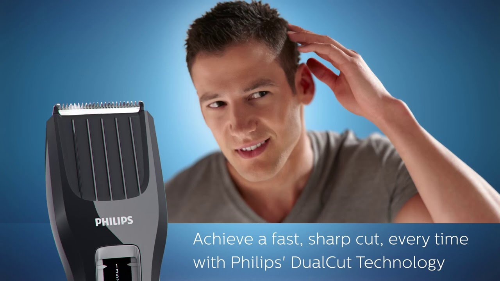
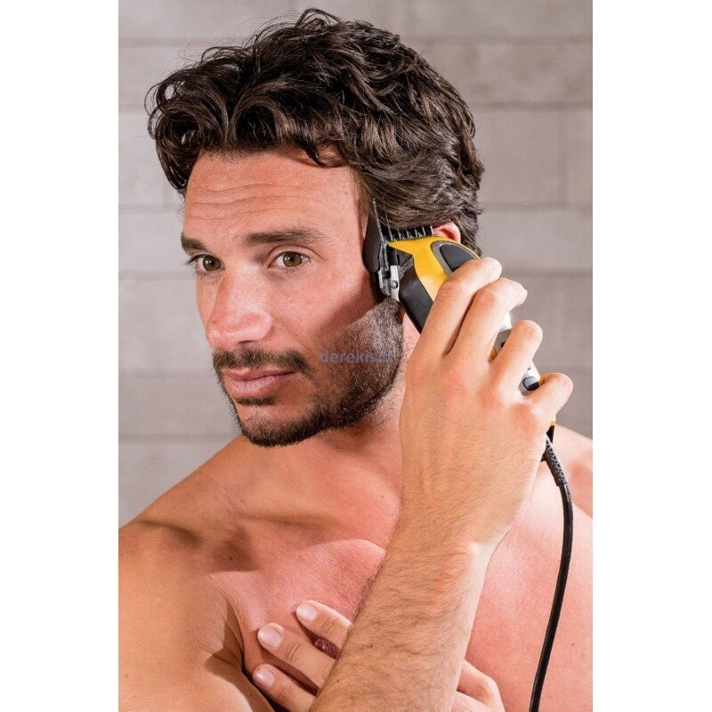

Kirpimo mašinėlės | groziui.lt
 Valiuta: DKK GBP HRK ISK NOK PLN RON SEK +370 646 95900 Susisiekime Prisijungimas Prisijungimas Prekių krepšelis Krepšelis tuščias. Viso prekių už 0 00 € Peržiūrėti krepšelį Iki nemokamo pristatymo liko 50 00 € Pristatysime nemokamai! PREKIŲ PRISTATYMAS Pristatome visoje Lietuvoje! Kurjeriu ir paštomatu! Nemokamas pristatymas
Perkant už 50 € ir daugiau!
BEAUTYFOR PREKĖS Kirpykloms Plaukų priežiūros priemonės Šampūnai Kondicionieriai Plaukų kaukės Plaukų aliejai, serumai Plaukų dažai Plaukų dažų oksidantai Trumpalaikiai plaukų dažai Purškiami plaukų dažai Kitos plaukų priežiūros priemonės Šukos, šepečiai Vienkartinės priemonės kirpykloms Rankšluosčiai ir servetėlės Pirštinės Kaklajuostės, folija, peniuarai Vienkartinės kepuraitės Kitos vienkartinės kirpyklos priemonės Rinkiniai kelionėms Baldai kirpykloms Kirpyklų kėdės ir krėslai Vežimėliai ir staliukai Plautuvės Mobilios plautuvės Kirpyklos baldų kolekcijos Barber krėslai Laukiamojo baldai ir veidrodžiai Kirpyklų pakojai ir kiti priedai Žirklės Žirklės kirpimui Žirklės filiravimui Skustuvai Kirpyklų įranga Plaukų džiovintuvai Plaukų tiesintuvai Plaukų formavimo įranga Kirpimo mašinėlės Įrankiai ir prietaisai kirpykloms Segtukai, indeliai, dubenėliai Prijuostės, peniuarai kirpėjams ir kitos prekės kyrpykloms Antakiai, blakstienos Antakių ir blakstienų dažai Pincetai Blakstienų - antakių laminavimo, priauginimo reikmenys Kilpiniai rankšluosčiai Priemonės barzdos priežiūrai Gyvūnų priežiūrai Šampūnai ir kosmetika Depiliacijai Vienkartinės priemonės depiliacijai Depiliavimo juostos Vienkartinės pirštinės depiliacijai Mentelės Kitos prekės depiliacijai Rinkiniai kelionėms Vaškai, cukraus pastos Vaškas depiliacijai Vaškai kasetėse Vaškas skardinėje Vaškas granulėmis Cukraus pastos Kitos depiliavimo priemonės Vaško šildytuvai Vaško kasečių šildytuvai Daugiafunkciniai vaško šildytuvai Vaško depiliacijai šildytuvai Cukraus pastos šildytuvai Cukraus kasečių šildytuvai Cukraus pastos šildytuvai Priemonės prieš ir po depiliacijos Priemonės prieš depiliaciją Priemonės po depiliacijos Manikiūrui ir pedikiūrui Vienkartinės prekės manikiūrui ir pedikiūrui Celiuliozė, servetėlės Vienkartinės pirštinės manikiūrui ir pedikiūrui Nagų dildės Kitos vienkartinės prekės Rinkiniai kelionėms Nagų priežiūros priemonės Peclavus kosmetika nagams ir pėdoms Arkada kosmetika nagams Kosmetika manikiūrui ir pedikiūrui Nagų stiprikliai ir kietikliai Nagų odelių aliejus, minkštiklis Parafinas Nagų lakai Lakai nagams Nagų lako viršutinis sluoksnis Nagų lako pagrindas Nagų lako valikliai Priemonės nagų dailei Nagų lakai vaikams Nagų papuošimai Nagų priauginimo priemonės Bee Professional priemonės Kinetics priemonės Gelinio lakavimo priemonės Kinetics geliniai lakai Bee Professional geliniai lakai Gelinio lako pagrindas Gelio viršutinis sluoksnis Valomasis gelio skystis Dehidratoriai Gelio lipnumo nuėmėjai Baldai manikiūrui ir pedikiūrui Manikiūro stalai Pedikiūro krėslai Pakojai pedikiūrui Manikiūro ir pedikiūro lempos Vežimėliai Kiti pedikiūro ir manikiūro baldai Įrankiai manikiūrui ir pedikiūrui Įrankiai odelėms ir nagams Frezos antgaliai ir kiti priedai Pėdų dildės Teptukai geliui, dailei Aparatai ir įranga Manikiūro aparatai Pedikiūro aparatai Dulkių surinkėjai ir maišeliai LED lempos nagams UV lempos nagams Pedikiūro, manikiūro vonelės Parafino vonelės Kitos manikiūro ir pedikiūro prekės Kosmetologijai Vienkartinės priemonės kosmetologijai Vienkartinės paklodės kosmetologijai Rankšluosčiai ir servetėlės kosmetologijai Pirštinės kosmetologijai Kilpinės ir veliūrinės paklodės, užvalkalėliai kėdutėms Kitos vienkartinės prekės kosmetologijai Rinkiniai kelionėms Baldai kosmetologijai Kosmetologiniai krėslai, lovos Kėdutės Kosmetologiniai vežimėliai Kosmetologinės lempos Vizažui (makiažui) Baldai tatuiruočių salonams Tatuiruočių krėslai, stalai-lovos Tatuiruočių salonų vežimėliai ir staliukai Tatuiruočių meistro kėdutės Kosmetika Veidui Kūnui Rankoms Kojoms ir pėdoms Rūgštinėms procedūroms Kosmetologiniai, medicininiai geliai Cello geliai GUAM kosmetika Kosmetika vaikams Kosmetika vyrams Grimas veidui Įrankiai kosmetologijai Adatiniai voleliai Kiti įrankiai Įranga ir prietaisai kosmetologijai Įranga veido priežiūrai Įranga kūno priežiūrai Kiti prietaisai Kitos prekės, dezinfekcija kosmetologijai Sterilių įrankių saugyklos Kilpiniai rankšluosčiai Masažui Vienkartinės priemonės masažui Vienkartinės paklodės masažui Vienkartinės kelnaitės ir šlepetės Vienkartiniai rankšluosčiai Paklodės ir užvalkalai masažo kėdėms Vienkartiniai chalatai Kitos vienkartinės prekės masažui Rinkiniai kelionėms Baldai masažui Masažo stalai Masažo krėslai, kėdės Kėdutės masažistui Įranga Masažo aparatai Masažo akmenys, masažo akmenų šildytuvai Masažo aliejus Masažo aliejus kūnui Masažo aliejus veidui Kosmetika masažui Odos šveitikliai Odos kremai-sviestas Treniruokliai Kitos prekės, dezinfekcija masažui Dezinfekcija Odos dezinfekcija Desmanol dezinfekcijos priemonės Chemisept dezinfekcijos priemonės Priemonės kraujo stabdymui Spiritinės servetėlės Kitos dezinfekcinės priemonės Paviršių dezinfekcijai Mikrozid dezinfekcijos priemonės Intrusept dezinfekcijos priemonės Bacticid dezinfekcijos priemonės Instrumentų dezinfekcijai Intrusept dezinfekcijos priemonės Bacticid dezinfekcijos priemonės Sterit dezinfekcijos priemonės Kiti instrumentų dezinfekantai Kitos prekės Dezinfekcijos prietaisai ir saugyklos Antibakterinis muilas Darbo su sterilizatoriais žurnalai Valikliai Veido apsaugai VIEŠBUČIAMS KOSMETIKA VIEŠBUČIAMS Oriva kosmetikos linija Sign kosmetikos linija PRIEDAI VONIOS KAMBARYS Šlepetės KAVA DOVANŲ IDĖJOS KONTAKTAIPrekių katalogas
BEAUTYFOR PREKĖS Kirpykloms Plaukų priežiūros priemonės Šampūnai Kondicionieriai Plaukų kaukės Plaukų aliejai, serumai Plaukų dažai Plaukų dažų oksidantai Trumpalaikiai plaukų dažai Purškiami plaukų dažai Kitos plaukų priežiūros priemonės Šukos, šepečiai Vienkartinės priemonės kirpykloms Rankšluosčiai ir servetėlės Pirštinės Kaklajuostės, folija, peniuarai Vienkartinės kepuraitės Kitos vienkartinės kirpyklos priemonės Rinkiniai kelionėms Baldai kirpykloms Kirpyklų kėdės ir krėslai Vežimėliai ir staliukai Plautuvės Mobilios plautuvės Kirpyklos baldų kolekcijos LOFT OBSESSION Barber krėslai Laukiamojo baldai ir veidrodžiai Kirpyklų pakojai ir kiti priedai Žirklės Žirklės kirpimui Žirklės filiravimui Skustuvai Kirpyklų įranga Plaukų džiovintuvai Plaukų tiesintuvai Plaukų formavimo įranga Kirpimo mašinėlės Įrankiai ir prietaisai kirpykloms Segtukai, indeliai, dubenėliai Prijuostės, peniuarai kirpėjams ir kitos prekės kyrpykloms Antakiai, blakstienos Antakių ir blakstienų dažai Pincetai Blakstienų - antakių laminavimo, priauginimo reikmenys Kilpiniai rankšluosčiai Priemonės barzdos priežiūrai Gyvūnų priežiūrai Šampūnai ir kosmetika Depiliacijai Vienkartinės priemonės depiliacijai Depiliavimo juostos Vienkartinės pirštinės depiliacijai Mentelės Kitos prekės depiliacijai Rinkiniai kelionėms Vaškai, cukraus pastos Vaškas depiliacijai Vaškai kasetėse Vaškas skardinėje Vaškas granulėmis Cukraus pastos Kitos depiliavimo priemonės Vaško šildytuvai Vaško kasečių šildytuvai Daugiafunkciniai vaško šildytuvai Vaško depiliacijai šildytuvai Cukraus pastos šildytuvai Cukraus kasečių šildytuvai Cukraus pastos šildytuvai Priemonės prieš ir po depiliacijos Priemonės prieš depiliaciją Priemonės po depiliacijos Manikiūrui ir pedikiūrui Vienkartinės prekės manikiūrui ir pedikiūrui Celiuliozė, servetėlės Vienkartinės pirštinės manikiūrui ir pedikiūrui Nagų dildės Kitos vienkartinės prekės Rinkiniai kelionėms Nagų priežiūros priemonės Peclavus kosmetika nagams ir pėdoms Arkada kosmetika nagams Kosmetika manikiūrui ir pedikiūrui Nagų stiprikliai ir kietikliai Nagų odelių aliejus, minkštiklis Parafinas Nagų lakai Lakai nagams Nagų lako viršutinis sluoksnis Nagų lako pagrindas Nagų lako valikliai Priemonės nagų dailei Nagų lakai vaikams Nagų papuošimai Nagų priauginimo priemonės Bee Professional priemonės Kinetics priemonės Gelinio lakavimo priemonės Kinetics geliniai lakai Bee Professional geliniai lakai Gelinio lako pagrindas Gelio viršutinis sluoksnis Valomasis gelio skystis Dehidratoriai Gelio lipnumo nuėmėjai Baldai manikiūrui ir pedikiūrui Manikiūro stalai Pedikiūro krėslai Pakojai pedikiūrui Manikiūro ir pedikiūro lempos Vežimėliai Kiti pedikiūro ir manikiūro baldai Įrankiai manikiūrui ir pedikiūrui Įrankiai odelėms ir nagams Frezos antgaliai ir kiti priedai Pėdų dildės Teptukai geliui, dailei Aparatai ir įranga Manikiūro aparatai Pedikiūro aparatai Dulkių surinkėjai ir maišeliai LED lempos nagams UV lempos nagams Pedikiūro, manikiūro vonelės Parafino vonelės Kitos manikiūro ir pedikiūro prekės Kosmetologijai Vienkartinės priemonės kosmetologijai Vienkartinės paklodės kosmetologijai Rankšluosčiai ir servetėlės kosmetologijai Pirštinės kosmetologijai Kilpinės ir veliūrinės paklodės, užvalkalėliai kėdutėms Kitos vienkartinės prekės kosmetologijai Rinkiniai kelionėms Baldai kosmetologijai Kosmetologiniai krėslai, lovos Kėdutės Kosmetologiniai vežimėliai Kosmetologinės lempos Vizažui (makiažui) Baldai tatuiruočių salonams Tatuiruočių krėslai, stalai-lovos Tatuiruočių salonų vežimėliai ir staliukai Tatuiruočių meistro kėdutės Kosmetika Veidui Veido kaukės, hidrolatai Dermedics kosmetika APIS kosmetika Bielenda kosmetika SYIS kosmetika Gabor kosmetika IncaRose kosmetika Kūnui Rankoms Kojoms ir pėdoms Rūgštinėms procedūroms Kosmetologiniai, medicininiai geliai Cello geliai GUAM kosmetika Kosmetika vaikams Kosmetika vyrams Grimas veidui Įrankiai kosmetologijai Adatiniai voleliai Kiti įrankiai Įranga ir prietaisai kosmetologijai Įranga veido priežiūrai Įranga kūno priežiūrai Kiti prietaisai Kitos prekės, dezinfekcija kosmetologijai Sterilių įrankių saugyklos Kilpiniai rankšluosčiai Masažui Vienkartinės priemonės masažui Vienkartinės paklodės masažui Vienkartinės kelnaitės ir šlepetės Vienkartiniai rankšluosčiai Paklodės ir užvalkalai masažo kėdėms Vienkartiniai chalatai Kitos vienkartinės prekės masažui Rinkiniai kelionėms Baldai masažui Masažo stalai Masažo krėslai, kėdės Kėdutės masažistui Įranga Masažo aparatai Masažo akmenys, masažo akmenų šildytuvai Masažo aliejus Masažo aliejus kūnui Masažo aliejus veidui Kosmetika masažui Odos šveitikliai Odos kremai-sviestas Treniruokliai Kitos prekės, dezinfekcija masažui Dezinfekcija Odos dezinfekcija Desmanol dezinfekcijos priemonės Chemisept dezinfekcijos priemonės Priemonės kraujo stabdymui Spiritinės servetėlės Kitos dezinfekcinės priemonės Paviršių dezinfekcijai Mikrozid dezinfekcijos priemonės Intrusept dezinfekcijos priemonės Bacticid dezinfekcijos priemonės Instrumentų dezinfekcijai Intrusept dezinfekcijos priemonės Bacticid dezinfekcijos priemonės Sterit dezinfekcijos priemonės Kiti instrumentų dezinfekantai Kitos prekės Dezinfekcijos prietaisai ir saugyklos Antibakterinis muilas Darbo su sterilizatoriais žurnalai Valikliai Veido apsaugai VIEŠBUČIAMS KOSMETIKA VIEŠBUČIAMS Oriva kosmetikos linija Sign kosmetikos linija PRIEDAI Oriva linija Earth linija VONIOS KAMBARYS Šlepetės KAVA DOVANŲ IDĖJOS KONTAKTAI Pradžia / Kirpykloms / Kirpyklų įranga / Kirpimo mašinėlėsKirpykloms
Plaukų priežiūros priemonės Vienkartinės priemonės kirpykloms Baldai kirpykloms Žirklės Kirpyklų įranga Plaukų džiovintuvai Plaukų tiesintuvai Plaukų formavimo įranga Kirpimo mašinėlės Įrankiai ir prietaisai kirpykloms Prijuostės, peniuarai kirpėjams ir kitos prekės kyrpykloms Antakiai, blakstienos Kilpiniai rankšluosčiai Priemonės barzdos priežiūrai Gyvūnų priežiūraiNaujienlaiškis
Kirpimo mašinėlės
1 - 7 iš 7 Kiepe Professional plaukų kirpimo mašinėlė - trimeris DIAVEL mini Kodas: 6331 79 99 € -20 % Kiepe Professional plaukų kirpimo mašinėlė Diavel Kodas: 6336Pakraunama, belaidė
67 64 € 84 55 € Sutaupykite 16 91 € Kiepe rinkinys BAD COMBO 6355 plaukų kirpimo mašinėlė + trimeris Kodas: 6335 137 00 € Kiepe ašmenys kirpimo mašinėlems #6200 #6500 #6900, 1 vnt. Kodas: 600 14 99 € Kiepe Professional plaukų kirpimo mašinėlė - trimeris Estremo EVO Kodas: 6330Įkraunama, belaidė
47 49 € Kiepe Professional plaukų kirpimo mašinėlė Brutale Kodas: 6310 51 29 € Kiepe Professional plaukų kirpimo mašinėlė - trimeris STILO 5900 Kodas: 5900Pakraunama, belaidė
39 99 € Plaukų kirpimo mašinėlė yra specializuotas prietaisas, naudojamas žmogaus galvos plaukams kirpti. Kirpimo mašinėlė veikia tuo pačiu principu kaip žirklės, tačiau visiškai skiriasi nuo pačių žirklių ir plaukų skustuvų. Panašios plaukų kirpimo masineles, tik sunkesnės naudojamos avių kailiui kirpti, tačiau dažnai vadinamos rankininėmis arba mašininėmis žirklėmis.
Veikimo principas
Plaukų kirpimo mašinėlę sudaro pora paaštrintų į šukąs panašių peiliukų - ašmenų, glaudžiai susiliečiančių vienas virš kito, ir šono, slystančio į šonus vienas kito atžvilgiu, mechanizmas, kuris gali būti rankinis arba elektrinis, kad peiliukai svyruotų iš vienos pusės į kitą. Profesionalios plaukų kirpimo mašinėlės perkeliamos taip, kad plaukai būtų tarp šukų dantų ir kerpami, kai vienas peiliukas slysta šonu kito atžvilgiu.
Rankiniu būdu valdomos kirpimo mašineles
Plaukų kirpimo mašinėlės valdomos pora rankenų, kurios pakaitomis suspaudžiamos ir paleidžiamos. Tokią plaukų mašinėlę naudojo plaukams kirpti legvai ir greitai. Tokie kirpimai išpopuliarėjo tarp berniukų, dažniausiai mokyklose, ir jaunuolių, kariuomenėje ir kalėjimuose.
Elektrinės plaukų kirpimo mašinėlės kirpykloms
Elektrinės kirpimo mašinėlės veikia taip pat, kaip rankinės, tačiau varomos elektros varikliu, dėl kurio peiliai svyruoja iš vienos pusės į kitą automatiškai. Daugelyje šalių tokios mašinėlės pamažu išstūmė rankines plaukų kirpimo mašinėles kirpykloms.
Pirmosios plaukų kirpimo mašinėlės profesionalams buvo išrastos Leo Wahl 1921 m., kuomet L. Wahl užpatentavo savo galutinį išradimo projektą - pirmąją elektrinę kirpimo mašinėlę. Per metus „Wahl Manufacturing“ pagamino ir pardavė tūkstančius kirpimo mašinų visoje Jungtinėse Valstijose.
Dar vienas populiarus JAV elektrinių plaukų kirpimo mašinėles profesionalams prekės ženklas - profesionalios plaukų kirpimo mašinėlės OSTER (taip pat susikūręs 1921m.) ir toliau sėkmingai dirba versle, labai sėkmingi įsitvirtinę kirpimo mašinų pramonėje, kaip ir daugelis kitų bendrovių.
Priežiūra
Profesionali kirpimo mašinėlė turi būti tinkamai prižiūrima. Elektrinius kirpimo peiliukus reikia dažnai tepti specialiu aliejumi. Kiekvienas plaukų kirpimo mašinų gamintojas parduoda savo prekės ženklo plaukų kirpimo priemonių aliejų. Kirpimo mašinėlės profesionalios taip pat galima prižiūrėti naudojant purškiamąjį aerozolį, kuris veikia kaip aušinimo, dezinfekavimo, tepalo, valiklis ir apsaugo nuo rūdžių.
Dažniausiai plaukų kirpimo aliejus yra paprasčiausias mineralinis aliejus, supakuotas buteliuose su lašintuvo antgaliu.
Šiuo metu rinkoje yra gausybė prekinių ženklų kirpimo mašinėlių, tad reiktų atidžiai peržiūrėti gamintojų sąrašus pagal poreikius atitinkančius techninius parametrus, todėl rekomenduojama atsižvelgti į plaukų kirpimo mašinėles profesionalams atsiliepimai. Būtina atminti, kad geriausios plaukų kirpimo mašinėlės – ilgaamžės, turinčios galingą variklį, patvarų metalinį korpusą, nerūdijančio plieno ašmenis, tylų veikimo variklį, lengvą ir sklandų ašmenų ilgio reguliavimą, skleidžia mažą vibraciją ir veikia be įjungto maitinimo šaltinio - įkraunamos (belaidės). Nuo šių parametrų kokybės priklauso ir kirpimo mašinėlės kaina.
